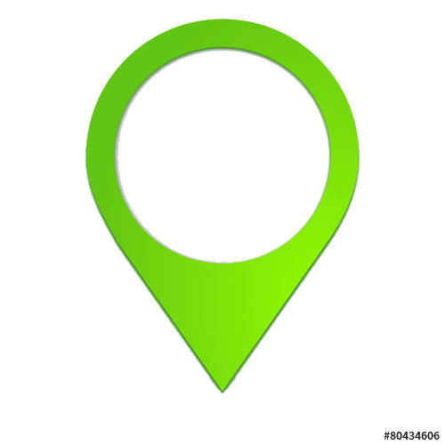

{{ reference.mission }}
Client : {{ reference.client }}
 Nom de la ville : {{ville.nomVille}} ({{ville.departement}})
Dates
{{ reference.anneeDebut }} - {{ reference.anneeFin}}
Montant des prestations
{{ reference.montantPrestation }}
Missions détaillées :
{{reference.detailPrestation}}